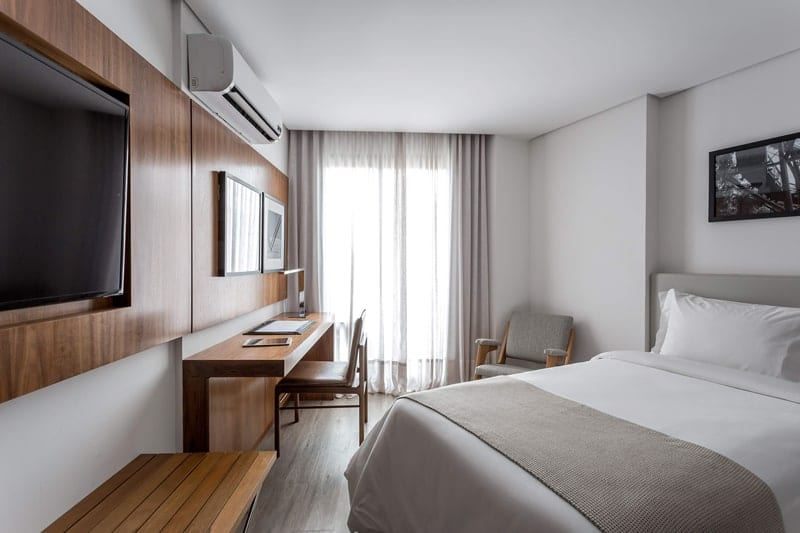

Simple Room
Com 25 m², o Simple Room tem uma cama de solteiro e varanda individual com vista impressionante. O café da manhã no Unisalesiano Restaurante está incluso na diária e, como diferencial, dispomos também da opção reduzida em horário estendido (6:00 às 22:00).